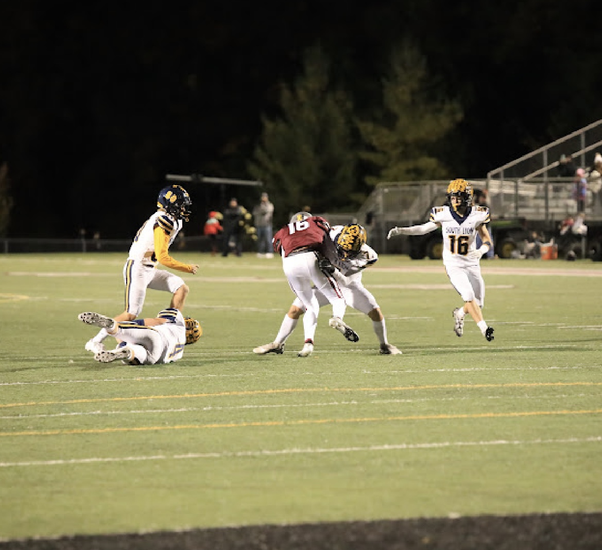
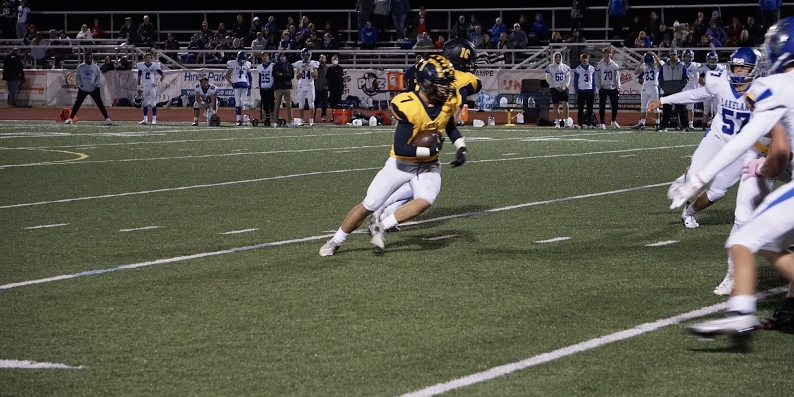
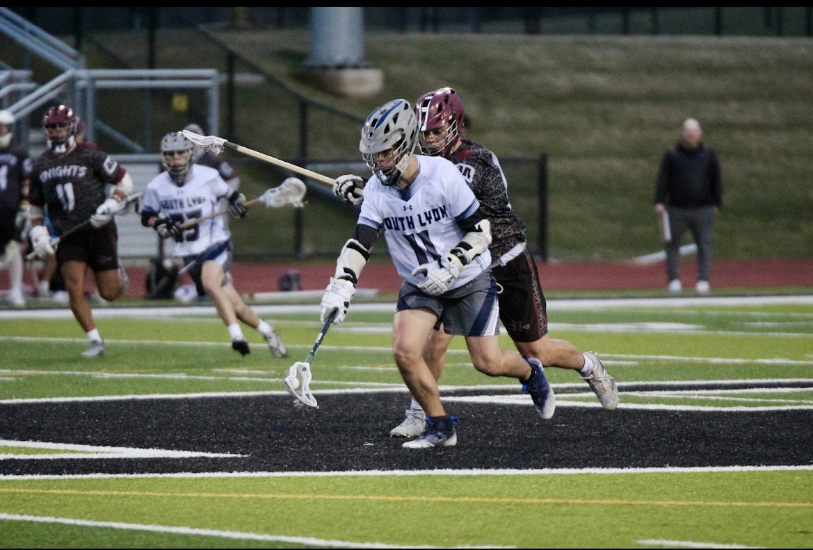
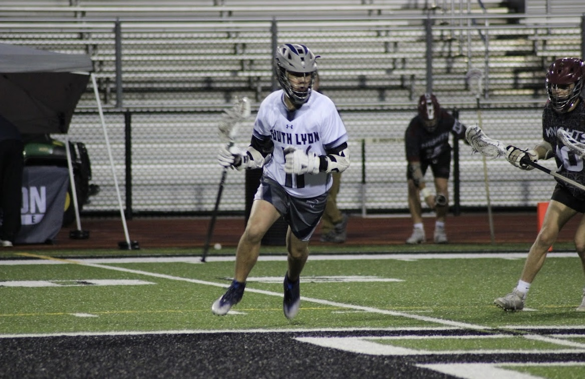

Football
I played Football all four years of high school. My senior season concluded in the second round of the playoffs against one of the best teams in the state against one of the best teams in the state I played outside linebacker and backup running my whole senior season. I was number 7!
 Lacrosse
I have played Lacrosse all four years of high school. I am currently in season for Lacrosse. I am whats called a fogo in Lacrosse. basically I take the faceoff that happens after every goal or the start of every quarter and after I win or lose I sub off the field. I prefer Lacrosse to any other sport it is my faveorite and I am number 11
 | Sunday | Monday | Tuesday | Wednesday | Thursday | Friday | Saturday |
|---|---|---|---|---|---|---|
| Free Day | Practice | Practice | Game | Practice | Game | Game |